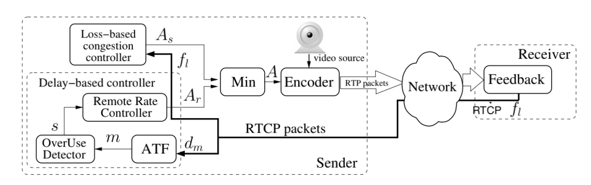
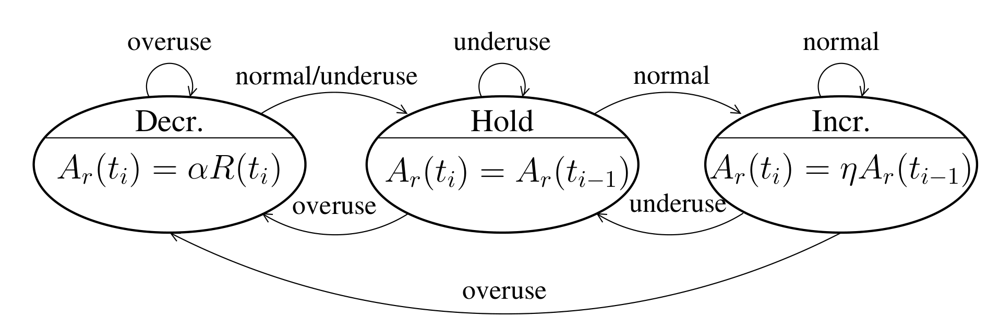

GCC结合延迟和丢包情况，预测可用带宽来控制发送的码率。webrtc有NACK、FEC等解决丢包问题，带宽估计对较小的丢包不太敏感，而对基于延迟的抖动更大的灵敏度。当延迟变大时，在忽略掉传输数据大小变化的影响后，可以认为是网络堵塞，需要降低码率；而在延迟变小的情况下，认为网络通常，可以提高码率。所以当网络延迟较大，但没有丢包的情况下，GCC也会对带宽进行很大程度的调整。也就是说，延迟稳定的情况下，即使延迟高也不影响带宽估计；如果延迟小但是抖动大，那就会迅速降低估测的带宽。
REMB-GCC在应对突发峰值流量方面存在一些问题：
- 在初始阶段，系统处于Increase状态，当检测到Decrease状态时，会调整码率为 ，此时，可能会出现 的情况，导致在后续中 较小。如果此时需要发送关键帧，PacedSender队列中将有大量数据包等待发送，这将造成较大的排队延迟。
- 码率估计模块反馈给编码器的码率较低，但当编码器需要编码关键帧时，编码器给出的码率仍然比反馈的码率高，这将增加发送关键帧的数据包量。
这样会导致发送端的排队延迟较大，从而导致接收端的jitterBuffer延迟也较大。目前REMB-GCC算法已被废弃，码率估计模块全部放在发送端。TFB-GCC算法进行了以下改进：
- 延迟估算和丢包估算都在发送端处理，接收端只需要定期反馈RTCP包和丢包率。
- 延迟估算采用TrendLine滤波器代替Kalman滤波器，通过拟合直线计算延迟梯度，从而估算网络拥塞
- 增加了RTP扩展头，添加了传输层序列号transport-wide sequence number，用于基于session进行反馈统计。
- 扩展了RTCP协议，增加了接收端Transport-CC RR报文反馈，该报文包含接收端收到的媒体包序列号和到达时间等信息，用于发送端实现基于延迟的带宽估计。

实现原理分析
基于延迟的带宽估计
RTP和RTCP扩展
RTP报文头如下：
1 | 0 1 2 3 |
扩展位X表示是否启用扩展。TFB-GCC扩展了RTP头，添加了传输层序列号transport-wide sequence number，用于基于session进行反馈统计。
1 | 0 1 2 3 |
2字节的transport-wide sequence number是传输层序列号，会添加到每个要发送的RTP包，发送端每发送一个RTP包序列号就会累加1。当发送端发送多路流时，所有流的 RTP 包的该扩展字段都是连续计数的，不会分开独立计数。该扩展头的作用是为了标识发送的包和反馈的包对应关系，用来进行码率估计；而RTP报文中的序列号是媒体流的序列号，主要用来组帧和抗丢包。
接收端定期发送的Transport-CC RR报文格式如下：1
2
3
4
5
6
7
8
9
10
11
12
13
14
15
16
17
18
19
20
21
22
23
24
25 0 1 2 3
0 1 2 3 4 5 6 7|0 1 2 3 4 5 6 7|0 1 2 3 4 5 6 7|0 1 2 3 4 5 6 7
+-+-+-+-+-+-+-+-+-+-+-+-+-+-+-+-+-+-+-+-+-+-+-+-+-+-+-+-+-+-+-+-+
|V=2|P| FMT=15 | PT=205 | length |
+-+-+-+-+-+-+-+-+-+-+-+-+-+-+-+-+-+-+-+-+-+-+-+-+-+-+-+-+-+-+-+-+
| SSRC of packet sender |
+-+-+-+-+-+-+-+-+-+-+-+-+-+-+-+-+-+-+-+-+-+-+-+-+-+-+-+-+-+-+-+-+
| SSRC of media source |
+-+-+-+-+-+-+-+-+-+-+-+-+-+-+-+-+-+-+-+-+-+-+-+-+-+-+-+-+-+-+-+-+
| base sequence number | packet status count |
+-+-+-+-+-+-+-+-+-+-+-+-+-+-+-+-+-+-+-+-+-+-+-+-+-+-+-+-+-+-+-+-+
| reference time | fb pkt. count |
+-+-+-+-+-+-+-+-+-+-+-+-+-+-+-+-+-+-+-+-+-+-+-+-+-+-+-+-+-+-+-+-+
| packet chunk | packet chunk |
+-+-+-+-+-+-+-+-+-+-+-+-+-+-+-+-+-+-+-+-+-+-+-+-+-+-+-+-+-+-+-+-+
. .
. .
+-+-+-+-+-+-+-+-+-+-+-+-+-+-+-+-+-+-+-+-+-+-+-+-+-+-+-+-+-+-+-+-+
| packet chunk | recv delta | recv delta |
+-+-+-+-+-+-+-+-+-+-+-+-+-+-+-+-+-+-+-+-+-+-+-+-+-+-+-+-+-+-+-+-+
. .
. .
+-+-+-+-+-+-+-+-+-+-+-+-+-+-+-+-+-+-+-+-+-+-+-+-+-+-+-+-+-+-+-+-+
| recv delta | recv delta | zero padding |
+-+-+-+-+-+-+-+-+-+-+-+-+-+-+-+-+-+-+-+-+-+-+-+-+-+-+-+-+-+-+-+-+
FMT根据RFC4585定义是应用层反馈消息。
base sequence number：此反馈中第⼀个数据包的传输范围序列号，该数字不⼀定会随着每个反馈增加，在重新排序的情况下，它可能会减少。
packet status count：此反馈包含多少个 RTP 数据包的数量，从由基本序列号标识的数据包开始；比如记录的第一个 RTP 包的 transport sequence number 为 base sequence number，那么记录的第二个 RTP 包 transport sequence number 为 base sequence number + 1。
reference time：表示参考时间，以 64ms 为单位，RTCP 包记录的 RTP 包到达时间信息以这个 reference time 为基准进行计算。此数据包中的第⼀个 recv 增量是相对于参考时间的。即使某些反馈数据包丢失，参考时间也可以计算反馈之间的增量，因为它始终使用相同的时基。
feedback packets count：用于记录接收端发送的 Transport-wide 反馈包的个数，每发送⼀个反馈数据包，计数器就加一。这个字段可用于检测反馈包是否丢失。
packet chunk：数据包状态块列表，用来指示数据包到达的状态，指示的 RTP 数据包范围是从基本序列号标识的数据包开始的多个数据包。
recv delta：对于 packet chunk 中的“packet received”状态的包，也就是收到的 RTP 包，在 recv delta 列表中添加对应的的到达时间间隔信息，用于记录 RTP 包到达时间信息。通过前面的基整时间以及 recv delta，发送端可以计算出该 RTP 包在接收端的到达时间。
base sequence number:2字节，TransportFeedback包中记录的第一个RTP包的transport sequence number，在反馈的各个TransportFeedback RTCP包中，这个字段不一定是递增的，也有可能比之前的RTCP包小
packet status count:2字节，表示这个TransportFeedback包记录了多少个RTP包信息，这些RTP的transport sequence number以base sequence number为基准
，比如记录的第一个RTP包的transport sequence number为base sequence number，那么记录的第二个RTP包transport sequence number为base sequence number+1
reference time:3字节，表示参考时间，以64ms为单位，RTCP包记录的RTP包到达时间信息以这个reference time为基准进行计算
feedback packet count:1字节，用于计数发送的每个TransportFeedback包，相当于RTCP包的序列号。可用于检测TransportFeedback包的丢包情况
packet chunk:2字节，记录RTP包的到达状态，记录的这些RTP包transport sequence number通过base sequence number计算得到
recv delta: 8bits，对于”packet received”状态的包，也就是收到的RTP包，在recv delta列表中添加对应的的到达时间间隔信息，用于记录RTP包到达时间信息。通过前面的reference time以及recv delta信息，我们就可以得到RTP包到达时间
接收到的包seq和包的接收时间
丢失的包seq
SSRC of media source: 32 bits The synchronization source identifier of the media source that this piece of feedback information is related to. TODO: This is transport wide, do we just pick any of the media source SSRCs? - 这个反馈消息包对应的媒体流的同步源标识，这个值待确定，因为这是一个传输通道范围的反馈，这个值必要性不大，可以随意选取一个 media SSRC base sequence number: 16 bits The transport-wide sequence number of the first packet in this feedback. This number is not necessarily increased for every feedback; in the case of reordering it may be decreased. - 该 fb 包首个 rtp 包的 transport seq，非 rtp 包序列号。 packet status count: 16 bits The number of packets this feedback contains status for, starting with the packet identified by the base sequence number. - 该 fb packet 包含 rtp 包个数。 reference time: 24 bits Signed integer indicating an absolute reference time in some (unknown) time base chosen by the sender of the feedback packets. The value is to be interpreted in multiples of 64ms. The first recv delta in this packet is relative to the reference time. The reference time makes it possible to calculate the delta between feedbacks even if some feedback packets are lost, since it always uses the same time base. - 参考时间，fb 包首个 rtp 的到达时间/64 feedback packet count: 8 bits A counter incremented by one for each feedback packet sent. Used to detect feedback packet losses. - 已发送 feedback 包计数器，可用于 fb packet 丢失检测 packet chunk: 16 bits A list of packet status chunks. These indicate the status of a number of packets starting with the one identified by base sequence number. See below for details. - 描述 rtp 包 4 种状态（见：4.2），有 Run Length Chunk 和 Status Vector Chunk 两种格式 recv delta: 8 bits For each “packet received” status, in the packet status chunks, a receive delta block will follow. See details below. - 当 rtp 包的状态为 Packet received，通过 recv delta 记录其与前一个 rtp 包到达的时间间隔。
base sequence number：记录要反馈的第一个 RTP 包的 transport-wide sequence number
packet status count：该反馈报文包含了多少个 RTP 包的到达状态
reference time：接收端反馈报文的第一个包接收的基准时间（24bit），其值单位为 64ms
fb pkt.count：反馈报文发送的数量，相当于 RTCP RTPFB 报文的序号
packet chunk：记录发送端发送的 RTP 包的到达状态，该结构根据第 0 位的值可以表示为 Run length chunk 和 Status vector chunk
解析这个报文能得到
接收到的包seq和包的接收时间
丢失的包seq
待更新Run length chunk 结构
1 | 0 1 |
Status vector chunk 结构
1 | 0 1 |
Rtp Packet Status 包的状态 (Packet Status) 表示为 2 个比特的符号： 00 Packet not received （包未收到） 01 Packet received, small delta （包收到，间隔时间很小 ） 10 Packet received, large or negative delta（ 包收到，间隔时间很大或者为负数） 11 [Reserved], packet received, w/o recv delta (包收到了，但是没有间隔时间)
包组
相邻两包组的接收时间差减去发送时间差 ，对于正常的网络应该为0，出现拥堵报文被延迟，值增大。
WebRTC是将发送时间间隔小于5ms的数据包被归为一组（单个包误差大），计算组间的整体延迟梯度，且必须在发送方开启pacing发送。原因为：
- 发送端的pacer模块的调度一般是5ms一次发送多个数据包。
- wifi网络下存在短暂的信道中断现象，造成数据包的堆积，造成数据包burst（爆发式发送）。
分组的实现：
- 距离当前group第一个包发送时间在
5ms内属于同一个group，超过则开始新的分组 - 一个数据包相当于所在的group是burst，仍然归到这个group中
- 同一时间发送的数据，是发送端burst现象，一定是属于同一个group。wifi环境下的中断导致一段时间内的包聚集到达现象。burst现象判断的条件是：相对上一个包的传输延迟 、距离上个包接收时间小于等于5ms、分组的接收时间跨度小于100ms。
上边第三点，判断数据包是否属于一个burst代码如下：
1 | bool InterArrivalDelta::BelongsToBurst(Timestamp arrival_time, |
基于丢包的带宽估计
代码实现
REB-GCC在发送端实现，主要是SendSideBandwidthEstimation类。SendSideBandwidthEstimation::SetSendBitrate函数设置初始的预估带宽为300kbps。SendSideBandwidthEstimation::UpdateEstimate函数根据丢包、RTT及当前带宽的估计值调整下个时刻的估计带宽，在函数中有三次调用：
SendSideBandwidthEstimation::UpdatePacketsLost函数SendSideBandwidthEstimation::UpdateLossBasedEstimator函数GoogCcNetworkController::OnProcessInterval函数
主要有两种触发方式要修改：
- 收到RR包，受限于RR包的频率，大概1秒1次，更新了丢包率、RTT之后调用；
- 定时器，25ms一次，kUpdateIntervalMs=25，这个应该是为了防止RR包丢失或者不及时，更迅速灵敏的进行调整；
基于延迟的实现
到达时间滤波器
接收到传输的Transport-CC反馈信息的时候，会调用RtpTransportControllerSend::OnTransportFeedback函数。
1 | void RtpTransportControllerSend::OnTransportFeedback( |
ProcessTransportFeedbackInner根据Transport-CC报文的内容，返回一个std::vector<PacketResult>对象，包含每个包的发送时间和相对到达时间，用来计算单向相对延时。
DelayBasedBwe::IncomingPacketFeedbackVector分析延时梯度变化计算基于延时的梯度
InterArrival::ComputeDeltas函数包组发送和到达的时间差 和
TrendlineEstimator::Update计算基于延迟的带宽估计，进行Trendline Filter滤波的过程。
DelayBasedBwe::MaybeUpdateEstimate更新基于延迟估计的码率。
SendSideBandwidthEstimation::UpdateDelayBasedEstimate更新基于延迟的带宽。
遍历包组调用DelayBasedBwe::IncomingPacketFeedback进行基于延迟的带宽估计
AimdRateControl::ChangeState由过载检测器发出的状态信息kBwNormal/kBwUnderusing/kBwOverusing改变状态机的状态
AimdRateControl::ChangeBitrate根据AIMD对码率进行调整。
Trendline Filter
新版本中用Trendline Filter根据到达时间差、发送时间差、数据大小来估计单向延迟的趋势。这部分代码在TrendlineEstimator::UpdateTrendline函数开始实现，在TrendlineEstimator::Update函数中调用
单个包组传输的延迟梯度为:
每个包组叠加延迟为:
接下来进行平滑操作。这部分代码为:
1 | void TrendlineEstimator::UpdateTrendline(double recv_delta_ms, |
最小二乘计算斜率 在absl::optional<double> LinearFitSlope函数中计算:
1 | absl::optional<double> LinearFitSlope( |
使用最小二乘法拟合直线 ，这里边的 是包组的接收时间， 是smoothed_delay， 就是trend。
过载检测器
TrendlineEstimator::Detect函数根据trend判断当前带宽的状态。
1 | void TrendlineEstimator::Detect(double trend, double ts_delta, int64_t now_ms) { |
代码中，kMinNumDeltas,threshold_gain_取值分别为60和4。
自适应阈值
理想状况下，网络的延迟梯度是0，实际的网络中，不同转发路径的延迟梯度有波动且波动大小不同。如果设置阈值固定的太大可能无法探测到拥塞，太小导致算法对单项延迟梯度的变化很敏感，过度检测器会频繁检测到过载信号，导致基于时延的控制器会因为这个时延变化不断减小预测的带宽。实验中显示固定的阈值，GCC由于TCP流（TCP是基于丢包的拥塞控制）的时延产生大量的过载信号，导致有限状态机总是调低发送码率，最终导致GCC码率耗尽，即在和TCP流的竞争中，GCC流量出现饥饿现象。WebRTC使用了一种自适应的阈值调节算法：
其中 表示两组包计算延时梯度的时间差，意义就是距上次更新阈值时的时间间隔，每组数据包会触发一次探测，同时更新一次阈值。 是一个变化率，增长的基值是：当前的trend和上一个阈值的差值：
其中 阈值可以快升慢降。当网络处于正常状态时，阈值会以一个较小的变化率减小，当处于过载或低负载时，阈值会以一个相对大一点的变化率增大。
过载检测器之后，要进行阈值的更新，在TrendlineEstimator::UpdateThreshold函数实现。
1 | void TrendlineEstimator::UpdateThreshold(double modified_trend, |
码率控制器
码率控制维护一个状态机，根据过载探测器输出的信号，估算基于延迟的网络速率 。

有限状态机的目标是最小化端到端路径上缓冲区中的排队延迟。当网络拥塞时，过载检测器触发overuse信号，状态机处于 Decrase状态，应该降低发送码率，降低为过去 $500 ms$ 时间窗口内的最大 acked_bitrate的0.85倍；当网络中排队的数据包被快速释放时，过载检测器触发underuse信号，状态机进入hold状态；直到缓冲区被清空，网络平稳，过载检测器触发normal信号，状态机进入increase状态，开始探测是否可以增加发送码率。码率的调整根据以下式子：
其中 。
AimdRateControl::ChangeState由过载检测器发出的状态信息kBwNormal/kBwUnderusing/kBwOverusing改变状态机的状态：
1 | void AimdRateControl::ChangeState(const RateControlInput& input, |
AimdRateControl::ChangeBitrate根据AIMD对码率进行调整。
最终在将基于延的最大码率值保存到SendSideBandwidthEstimation::delay_based_limit_中。
1 | void SendSideBandwidthEstimation::UpdateDelayBasedEstimate(Timestamp at_time, |
基于丢包的实现
基于延时的算法通过监测网络延时的变化趋势来估计可用带宽，只在网络路径上的缓存队列比较长时才比较可靠。如果缓存队列较短，则可以根据丢包率来判断是否存在过载。相比之下，基于丢包的算法是应对已经发生拥塞情况的紧急措施。在物理链路中，大量丢包通常发生在路由器缓冲区已满时，这时必须降低发送数据量以使网络恢复。
发送端的基于丢包率的带宽估计方法是根据丢包数量评估网络拥塞程度，目的是当延迟估计模块的带宽调整不够及时时，可以用丢包率来进一步调整。丢包越多，表示网络拥塞越严重，需要降低发送码率来减轻拥塞；如果没有丢包，则说明网络状况良好，可以增加发送码率来探测更多可用带宽。该算法的关键是获取接收端的丢包率，并确定降低和提高发送码率的阈值。
当丢包率大于10%时，认为网络拥塞严重，应该主动降低发送码率以减轻拥塞。丢包率越高，发送码率降低的越多，最大可降低到原码率的50%。当丢包率小于2%时，认为网络状况良好，可以适当提高发送码率5%，探测是否有更多带宽可用。当丢包率在2%~10%时,认为网络拥塞一般，此时保持当前发送码率不变。这可以避免网络固有丢包被错判为拥塞导致不必要的码率降低，而这部分丢包则需要通过NACK、FEC等其他机制来进行数据恢复。
丢包率、RTT的计算通过RTCP包来实现
SR包
1 | 0 1 2 3 |
发送端解析接收端发过来的 RTCP RR 报文的lost fraction字段来判断丢包，它描述了从上一次 RR 报文发送后到本次 RR 报文期间的丢包率。
带宽确定
最后SendSideBandwidthEstimation::UpdateTargetBitrate中会取根据丢包得到的预估值和根据延时梯度得到的预估值中的较小值作为最终预估的最大码率。
确定完目标码率后会更新到 pacer，fec，编码模块中发挥作用。
参考
WebRTC基于TransportCC和Trendline Filter的发送端码率估计(Sendside-BWE)
Bandwidth Estimation in WebRTC (and the new Sender Side BWE)
WebRTC GCC拥塞控制算法详解